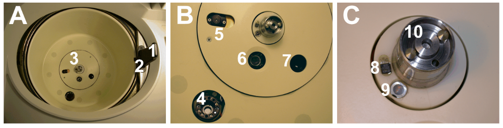
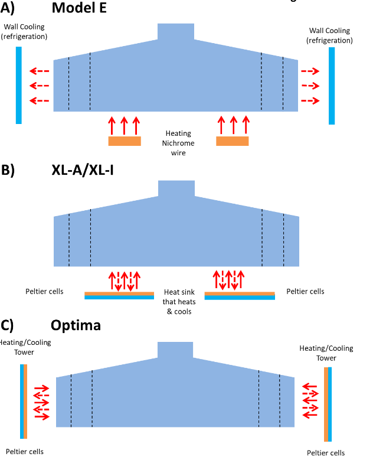

Beckman Coulter Optima™ AUC

-
10 micron radial resolution
-
0.5 nm wavelength resolution
-
Network interface
-
Multi-wavelength capable
-
Built-in database for data acquisition
The Optima™ AUC was released by Beckman Coulter in 2016. The Optima™ AUC is the next-generation analytical ultacentrifuge built upon the previous old standard ProteomeLab. Designed for optimal user convenience and higher-quality data, the Optima™ AUC includes a host of new features to offer the best experience for both new and existing AUC users. These enhanced features enable shorter experiments with increased resolution and consistency to yield better data with greater efficiency. The advantages of the Optima™ AUC are: convenient operation & control, increased data quality & resolution, and time-saving features that improve efficiency.
Convenience
[✓] Quick-turn optics for using absorbance & interference
[✓] Remote setup and viewing for simplified access to instrument details, live detail, and data export
[✓] Large touchscreen display provides more real-time information
[✓] Compatible with existing AUC rotors and accessories
High Resolution
[✓] Faster absorbance scan rate & improved radial resolution enhance discrimination of similar components
[✓] Greater Wavelength precision yields more reliable results
Time Savings
[✓] Multi-wavelength capabilities enable up to 20 analyses in one environment
[✓] Improved scan rate allows shorter run times with higher resolution
[✓] Advanced optical system designed for simultaneous absorbance and interference measurements
Instrument Components

Main Rotor Chamber
The rotor chamber is made of aluminium coated with a chemical-resistant epoxy finish. A drive spindle and safety plate are visible on the bottom. The slit-assembly is driven by a motor pot that is integrated in the safety plate. The bottom part of the chamber also includes a condenser lens (for Rayleigh interference optics), a index pulse/Hall-effect detector, a photo-electric device, a radiometer, a thermistor, and a mono-chromator mounting receptacle.
The index pulse detector determines the position of the rotor. The photo-electric device determines the maximum speed of the rotor based on the alternating reflective and non-reflective surfaces on the over-speed disk on the underside of the rotor. The radiometer measures the temperature of the rotor and is activated by the vacuum dropping below 100 \(\mu\)m Hg. The thermistor is not visible as it is under the safety plate and is used to measure the temperature of the chamber when the pressure of the chamber is above 100 \(\mu\)m Hg.
The drive shaft is powered by direct drive induction motors. The motor is brush-less and frequency controlled and the drive can handle speeds ranging from 1,000 RPM to 60,000 RPM.

A) This panel is an overview of the handle (1) and the lid (2) that close the rotor chamber. The safety plate at the bottom of the chamber is marked by (3).
B) This panel is zoomed in on (A3) and shows the mono-chromator mounting receptacle (4), the absorbance slit assembly (5), the radiometer (6), and the condenser lens (7).
C) This panal is a zoomed photo of the index pulse detector (8), the photo-electric device (9), and the driver spindle (10).
Figure 2.1 in Schirf, Virgil & Planen, Karel L. (2008). Analytical Ultracentrifuge User Guide Volume 1: Hardware. Center for Macromolecular Interactions. For pdf file, click here.
Vacuum System
The vacuum system consists of a diffusion pump in series with a mechanical vacuum pump. The system starts automatically when a run is stated, or manually with "Vacuum" on the touch screen. When the vacuum system is on, the chamber pressure will be displayed in microns.
To vent the vacuum after a run is finished, select the "Vent Vacuum" button on the display screen. After the door is opened, you will have a 5-minute window to switch out the rotors/cells wherein the chamber temperature remains as set. After this time period, the chamber will return to the approximate room temperature to minimize any condensation collection within the chamber.
If there are any leaks in cells prior to rotor acceleration, the vacuum system will be unable to pull a complete vacuum and will stop, showing an alert on the display screen. There will also be a change in temperature.
Leaks in the chamber itself are represented by discharge of oil vapor into the room. Check the Xenon flash-lamp assemble and ensure the the O-ring on the top of the flash lamp is intact and in place. Check the gasket on the underside of the sliding steel door to make sure it is intact, clean, and lightly covered in vacuum grease. If these checks do not resolve the issue, get a service engineer or experienced operator to check the photo-multiplier tube assembly.
Temperature Sensing and Control
The temperature within the rotor chamber is measured by a solid state thermophile located in the bottom of the chamber. The Optima uses a solid state thermo-electric refrigeration and heating system, and cooling is provided by forced air from fans. Temperature control occurs when the door is closed and the vacuum system is running.

A coarse pictorial side view of the general layout of the temperature control system from past and present analytical ultracentrifuges made by the same manufacturer.
A) Model E analytical ultracentrifuge, bottom area shows the approximate location of the nichrome wire heating element (orange horizontal bars at the bottom of rotor) and the refrigerated cooling coils located along the outside wall of the rotor chamber, indicated by the blue vertical bars,
B) the XL-A/XL-I analytical ultracentrifuge, bottom area shows the rough location of the Peltier cooling/heating cells (indicated by the orange/blue horizontal bars at the bottom of rotor located between the center of rotation and the radial position of the rotor holes), and
C) the Optima analytical ultracentrifuge with the cooling/heating Peltier cells located along the outside wall of the rotor chamber (indicated by the orange/blue vertical bars). In all cases the solid red arrows indicate the directional flow of heat during heating while the dashed red arrows indicate the directional flow of heat during cooling.
Figure 6 in Berkowitz, Steven & Laue, Tom. (2021). Boundary convection during velocity sedimentation in the Optima analytical ultracentrifuge. Analytical Biochemistry. 631. 114306. 10.1016/j.ab.2021.114306.
Console
The Optima™ AUC has a 15-inch (38 cm) touchscreen display console. This console can indicate the progression of experimental designs, and allows for remote monitoring capabilities.
Door and Barrier
The door is made of high-strength structural steel with a solenoid interlock to prevent contact with a spinning rotor. The door locks automatically when it is closed and a run has begun. It can only be opened when the rotor is at rest with the chamber at atmospheric pressure.
A 41-mm (1.63-in.) steel alloy armor ring acts as the primary barrier, surrounded by a 13-mm (0.5-in.) vacuum chamber to provide full protection for the operator.
Imbalance Detector And Over-speed Systems
The imbalance detector will force an automatic shutdown if the rotor loads are severely out of balanced.
Over-speed disks are located on the bottom of all rotors. Their alternating reflecting and non-reflecting sectors pass over the photo-electric device, generating a series of electrical pulses that can be analysed by the circuitry and software of the instrument. The set speed is checked against the over-speed disk after the rotor reaches 1,000 RPM. If the set speed is found to be greater than the allowed speed permitted by the disk, the speed setting is automatically lower without interrupting the run. An error message will however be displayed to alert the operator to the change.